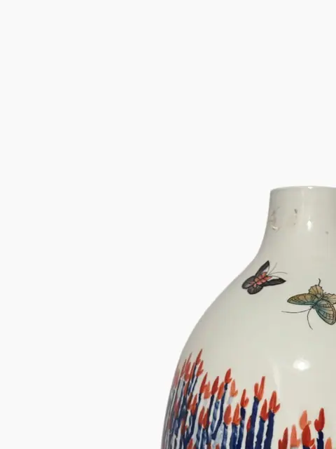
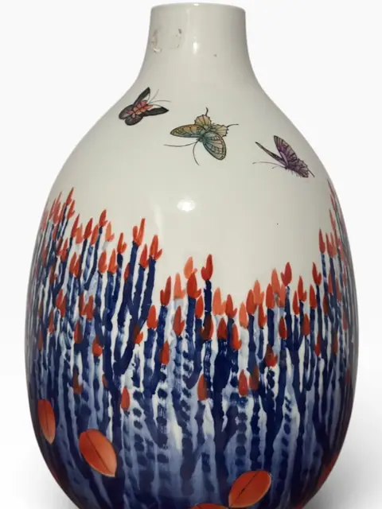
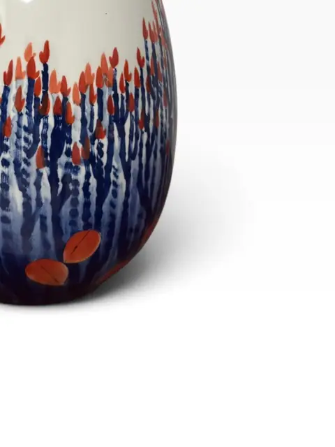
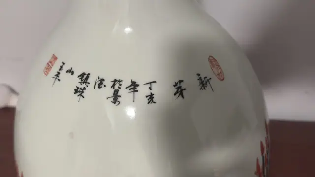
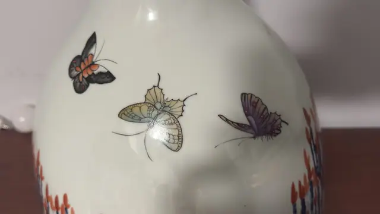
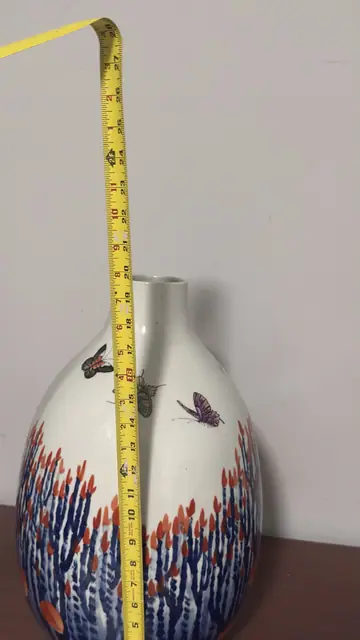

Handmade Objects
Contemporary Chinese Porcelain Vase with Butterflies and Floral Decoration, Dated 2007
· 21st century
Price Upon Request







About the Item
A contemporary Chinese porcelain ovoid vase enamelled with butterflies above blue-and-red flowering plants, the shoulder inscribed with a calligraphic poem and red artist seals. Dated by inscription to the dinghai year (2007). A fresh, decorative example of modern Jingdezhen-style studio porcelain. Dimensions: Height: 19.5 in (50 cm); Width: approx 9.5 in (24 cm) Signed by inscription: Chinese calligraphy on shoulder including '丁亥年' (dinghai year = 2007) with two red seal stamps. Famille-rose-type enamels: butterflies, blue stems with red buds. Height read from tape photo 05 (~19.5 in at mouth); width from photo 06 (~9.5 in, tape not exactly at widest point).
Details
- Creation Year:
- 21st century
- Medium:
- Porcelain
- Period:
- 21St
- Condition:
- Offered in the condition shown in the photographs.
- Reference Number:
- VO-379